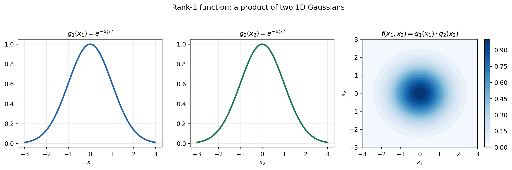
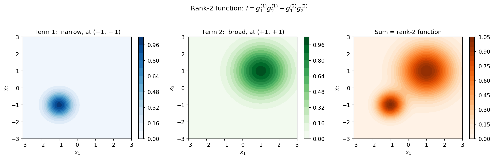
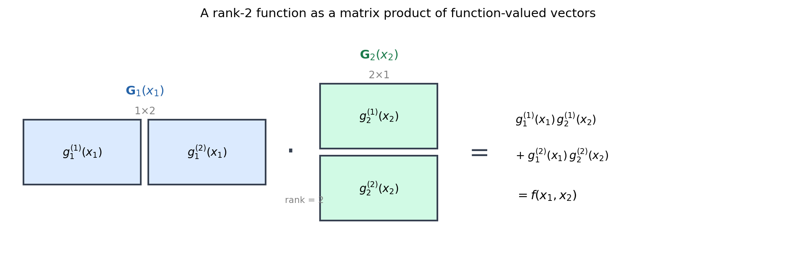
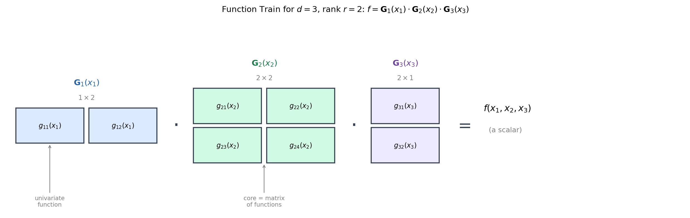
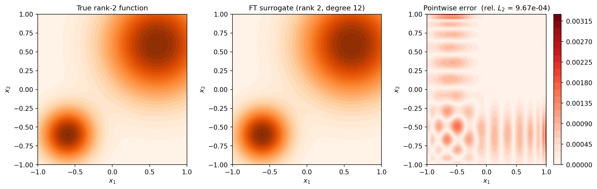
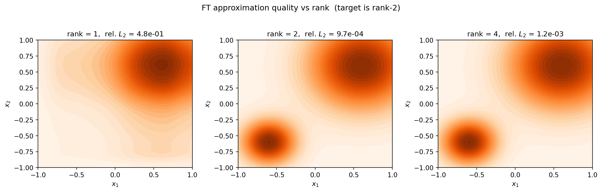

An Introduction to Function Trains
PyApprox Tutorial Library
Build intuition for low-rank functions and the function train decomposition.
TipDownload Notebook
Learning Objectives
After completing this tutorial, you will be able to:
- Explain what it means for a multivariate function to have low rank
- Construct rank-1 and rank-2 functions as products and sums of 1D functions
- Describe a function train core as a matrix whose entries are univariate functions
- Explain how the FT represents a \(d\)-dimensional function as a product of such matrices
- Build a simple rank-2 function train using PyApprox and verify its output
Why Function Trains?
Approximating a \(d\)-dimensional function on a full grid requires \(n^d\) evaluations — the curse of dimensionality discussed in What Makes a Good Surrogate?. The function train (FT) decomposition breaks this barrier by exploiting low-rank structure: when variables interact in a limited way, the FT represents the function with parameters scaling linearly in \(d\) rather than exponentially.
This tutorial builds intuition for the FT from the ground up, starting from the simplest possible case: a rank-1 function of two variables.
Low-Rank Functions
Rank-1: Separable Functions
The simplest structured multivariate function is a separable one:
\[ f(x_1, x_2) = g_1(x_1) \cdot g_2(x_2) \]
This is called rank-1 because the entire function is the product of two univariate pieces. Knowing \(g_1\) and \(g_2\) completely determines \(f\) — there is no irreducible two-variable interaction.
A familiar example is the product of two 1D Gaussians:
\[ f(x_1, x_2) = e^{-x_1^2 / 2} \cdot e^{-x_2^2 / 2} = e^{-(x_1^2 + x_2^2)/2} \]
The contour plot shows perfectly circular contour lines: the function is symmetric and has no preference between \(x_1\) and \(x_2\). Every horizontal slice of the surface at fixed \(x_1\) is just a rescaled version of \(g_2\), and vice versa. This is the hallmark of a rank-1 function.
NoteThe Analogy to Rank-1 Matrices
A rank-1 matrix can be written as an outer product: \(A_{ij} = u_i v_j\). A rank-1 function \(f(x_1, x_2) = g_1(x_1)\, g_2(x_2)\) is the exact same idea lifted to continuous functions. Just as a rank-1 matrix is determined by two vectors, a rank-1 function is determined by two univariate functions.
Rank-2: Sums of Products
Most interesting functions cannot be written as a single product. A rank-2 function is a sum of two rank-1 terms:
\[ f(x_1, x_2) = g_1^{(1)}(x_1)\cdot g_2^{(1)}(x_2) \;+\; g_1^{(2)}(x_1)\cdot g_2^{(2)}(x_2) \]
Each term is itself separable, but the sum introduces interactions that a single product could not capture. The rank measures how many such product terms are needed.
Let us build a concrete rank-2 example. We take two very different rank-1 terms and add them:

The rank-2 function has two distinct peaks and asymmetric contours — structure that no single rank-1 term could reproduce. The rank measures the complexity of interaction between variables: rank-1 means “completely separable”, higher rank means “more entangled”.
In general, a rank-\(r\) function of two variables is:
\[ f(x_1, x_2) = \sum_{\alpha=1}^{r} g_1^{(\alpha)}(x_1)\cdot g_2^{(\alpha)}(x_2) \]
The question for approximation is: how large does \(r\) need to be before we get an accurate representation? For many functions arising in UQ, the answer is surprisingly small even in high dimensions — and that is what the function train exploits.
From Products to Matrices of Functions
The rank-2 formula above can be written more compactly by thinking of the univariate pieces as entries of row and column vectors:
\[ f(x_1, x_2) = \underbrace{\begin{bmatrix} g_1^{(1)}(x_1) & g_1^{(2)}(x_1) \end{bmatrix}}_{\mathbf{G}_1(x_1) \in \mathbb{R}^{1 \times 2}} \underbrace{\begin{bmatrix} g_2^{(1)}(x_2) \\ g_2^{(2)}(x_2) \end{bmatrix}}_{\mathbf{G}_2(x_2) \in \mathbb{R}^{2 \times 1}} \]
Read this carefully: \(\mathbf{G}_1(x_1)\) is a \(1 \times 2\) row vector whose entries are univariate functions of \(x_1\), and \(\mathbf{G}_2(x_2)\) is a \(2 \times 1\) column vector whose entries are univariate functions of \(x_2\). Their “product” is an ordinary matrix-vector product carried out entry-by-entry, evaluated at the given \((x_1, x_2)\).
The result is a scalar: exactly our rank-2 function.
This observation is the heart of the function train. We have replaced the sum-of-products formula with a matrix product of function-valued matrices. The rank \(r\) becomes the shared dimension of the two matrices — identical to how the inner dimension of a matrix product determines the rank of the result in linear algebra.

Extending to Three Variables: The Function Train
Now suppose we have three variables: \(f(x_1, x_2, x_3)\). We would like to represent it as a chain of matrix multiplications. We introduce a middle core \(\mathbf{G}_2(x_2)\) that is neither a row vector nor a column vector, but a full \(r \times r\) matrix of univariate functions:
\[ f(x_1, x_2, x_3) = \underbrace{\mathbf{G}_1(x_1)}_{1 \times r} \;\cdot\; \underbrace{\mathbf{G}_2(x_2)}_{r \times r} \;\cdot\; \underbrace{\mathbf{G}_3(x_3)}_{r \times 1} \]
Each core \(\mathbf{G}_k(x_k)\) is a matrix of univariate functions of \(x_k\) only. For a fixed point \((x_1, x_2, x_3)\), each core becomes a matrix of numbers, and the whole expression is just an ordinary chain of matrix multiplications that produces a scalar.

The key properties to take away from this diagram are:
- The first core is always a \(1 \times r\) row vector (one row, \(r\) columns).
- The last core is always an \(r \times 1\) column vector (\(r\) rows, one column).
- Every interior core is a full \(r \times r\) matrix.
- The result of the chain is always a scalar, because \(1 \times r\) times \(r \times r\) times (possibly several more \(r \times r\)) times \(r \times 1\) gives \(1 \times 1\).
NoteRanks Can Vary Between Cores
The example above uses a single rank \(r = 2\) for all cores, but in general each pair of adjacent cores can have a different rank. For example, with \(d = 3\) variables and ranks \(r_1 = 2\), \(r_2 = 3\):
\[ f(x_1, x_2, x_3) = \underbrace{\mathbf{G}_1(x_1)}_{1 \times 2} \;\cdot\; \underbrace{\mathbf{G}_2(x_2)}_{2 \times 3} \;\cdot\; \underbrace{\mathbf{G}_3(x_3)}_{3 \times 1} \]
The shared dimensions still match at every boundary so the matrix chain produces a scalar. Allowing variable ranks lets the FT allocate more expressiveness to the dimensions that need it.
Extending to \(d\) variables is simply a matter of adding more cores in the chain:
\[ f(x_1, \ldots, x_d) = \mathbf{G}_1(x_1) \cdot \mathbf{G}_2(x_2) \cdots \mathbf{G}_{d-1}(x_{d-1}) \cdot \mathbf{G}_d(x_d) \]
Each core depends on a single variable. The coupling between variables comes entirely from the matrix products. This is the function train.
NoteConnection to Tensor Trains
The function train is the continuous analogue of the tensor train (TT) decomposition from numerical linear algebra. A TT decomposition represents a high-dimensional array \(A_{i_1 i_2 \cdots i_d}\) as a product of 3D “core” arrays. The FT does the same thing for continuous functions by replacing discrete indices with continuous variables and replacing array slices with univariate functions.
Each Core Entry is a Polynomial Expansion
In practice, each univariate function inside a core is represented as a polynomial chaos expansion (PCE) — a finite sum of orthogonal polynomials chosen to match the input distribution of that variable. This connects the function train directly to the polynomial surrogates you may already be familiar with.
TipRecap: PCEs and Orthogonal Polynomials
For a Gaussian variable \(x \sim \mathcal{N}(0,1)\), the natural polynomial basis is the Hermite polynomials \(\{He_0, He_1, He_2, \ldots\}\). For a uniform variable \(x \sim \mathcal{U}(-1,1)\), the basis is the Legendre polynomials. PyApprox selects the correct family automatically from the marginal distribution. See Building a Polynomial Chaos Surrogate for details.
With PCE entries, the \((i,j)\) entry of core \(k\) is:
\[ [\mathbf{G}_k(x_k)]_{ij} = \sum_{n=0}^{p} c_{ij,n}^{(k)} \, \psi_n(x_k) \]
where \(\psi_n\) are the orthonormal polynomials for variable \(k\) and \(c_{ij,n}^{(k)}\) are the trainable coefficients. The total number of parameters across the whole function train is:
\[ \text{nparams} = r \cdot p_1 + (d-2) \cdot r^2 \cdot p + r \cdot p_d \]
where \(p\) is the polynomial degree. This grows linearly in \(d\) for fixed \(r\), in contrast to the \(p^d\) terms in a full multivariate PCE. This is the core computational advantage of the function train representation.
Building a Rank-2 Function Train in PyApprox
We now build the rank-2, 3-variable function train shown in the diagram above using create_pce_functiontrain. This factory:
- Takes one marginal distribution per variable.
- Creates the correct orthogonal polynomial basis for each variable.
- Assembles the cores into a
FunctionTrainwith the specified rank.
import numpy as np
from pyapprox.util.backends.numpy import NumpyBkd
from pyapprox.probability import UniformMarginal, GaussianMarginal
from pyapprox.surrogates.functiontrain import (
FunctionTrain,
create_pce_functiontrain,
)
bkd = NumpyBkd()
np.random.seed(42)
# Three variables, all Uniform[-1, 1] → Legendre polynomials
marginals = [UniformMarginal(-1.0, 1.0, bkd) for _ in range(3)]
# Rank-2 FT, polynomial degree 4
ft = create_pce_functiontrain(marginals, max_level=4, ranks=[2, 2], bkd=bkd)The shapes confirm the structure: core 0 is \(1 \times 2\), core 1 is \(2 \times 2\), and core 2 is \(2 \times 1\).
We can evaluate the FT on a batch of samples just like any other surrogate:
# Evaluate on 2000 random samples
nsamples = 2000
samples = bkd.asarray(np.random.uniform(-1, 1, (3, nsamples)))
values = ft(samples)
NoteWhat Do the Outputs Mean at This Stage?
The FT above was initialised with small random coefficients, so its output is essentially random noise. In a real workflow we would fit the FT to training data from an expensive model using Alternating Least Squares (ALS).
Visualising a Fitted Rank-2 FT
To build intuition for what the FT actually represents, let us manually set the coefficients to reproduce the rank-2 Gaussian example from earlier.
# Recall our target:
# f(x1, x2) = g1_a(x1)*g2_a(x2) + g1_b(x1)*g2_b(x2) (rank-2, 2 variables)
# We will build a 2-variable version for this illustration.
from pyapprox.surrogates.functiontrain import ALSFitter
from pyapprox.surrogates.functiontrain.fitters import MSEFitter
from pyapprox.interface.functions.fromcallable.function import (
FunctionFromCallable,
)
from pyapprox.interface.functions.plot.plot2d_rectangular import (
Plotter2DRectangularDomain,
meshgrid_samples,
)
marginals_2d = [UniformMarginal(-1.0, 1.0, bkd) for _ in range(2)]
plot_limits = [-1, 1, -1, 1]
# Define the target as a FunctionProtocol for plotting
def _target(samples):
x1, x2 = samples[0], samples[1]
g1a = bkd.exp(-8 * (x1 + 0.6)**2)
g2a = bkd.exp(-8 * (x2 + 0.6)**2)
g1b = bkd.exp(-2 * (x1 - 0.6)**2)
g2b = bkd.exp(-2 * (x2 - 0.6)**2)
return bkd.reshape(g1a * g2a + g1b * g2b, (1, -1))
true_func = FunctionFromCallable(nqoi=1, nvars=2, fun=_target, bkd=bkd)
# Use higher degree so we can represent the Gaussians well
ft_2d = create_pce_functiontrain(
marginals_2d, max_level=12, ranks=[2], bkd=bkd, init_scale=0.1
)
# ── Training data ────────────────────────────────────────────────────────────
n_fit = 3000
s_fit = bkd.asarray(np.random.uniform(-1, 1, (2, n_fit)))
y_fit = true_func(s_fit)
# ── Step 1: ALS for a good initial guess ─────────────────────────────────────
als_result = ALSFitter(bkd, max_sweeps=50, tol=1e-14).fit(ft_2d, s_fit, y_fit)
# ── Step 2: MSE polish with gradient-based optimiser ─────────────────────────
mse_result = MSEFitter(bkd).fit(als_result.surrogate(), s_fit, y_fit)
ft_fitted = mse_result.surrogate()from _figures._function_train import plot_ft_fitted
fig, axes = plt.subplots(1, 3, figsize=(13, 4.2))
plot_ft_fitted(true_func, ft_fitted, plot_limits, bkd, axes, fig=fig)
plt.tight_layout()
plt.show()
The function train reconstructs both the narrow peak at \((-0.6, -0.6)\) and the broad peak at \((+0.6, +0.6)\) with very small error. Importantly, it does so using only univariate polynomial expansions connected through a \(2 \times 2\) matrix core.
What Does the Rank Control?
The rank \(r\) is the single number that determines how much interaction between variables the FT can represent. A quick experiment illustrates this:
from _figures._function_train import plot_ft_rank_comparison
from pyapprox.interface.functions.plot.plot2d_rectangular import meshgrid_samples
npts = 100
X, Y, eval_pts = meshgrid_samples(npts, plot_limits, bkd)
f_true_vals = bkd.to_numpy(true_func(eval_pts)[0]).reshape(X.shape)
fig, axes = plt.subplots(1, 3, figsize=(13, 4.0))
plot_ft_rank_comparison(
true_func, marginals_2d, s_fit, y_fit, eval_pts, X, f_true_vals,
plot_limits, bkd, axes,
)
plt.suptitle("FT approximation quality vs rank (target is rank-2)", fontsize=12,
y=1.02)
plt.tight_layout()
plt.show()
A rank-1 FT cannot simultaneously represent two spatially separated peaks; it is forced to average them into a single symmetric feature. Rank-2 matches the target exactly (up to polynomial truncation error), and rank-4 gives no further benefit for this particular function. This illustrates a key principle: the rank you need is determined by the function, not by the dimension.
Key Takeaways
- A rank-1 function is a product of univariate functions. No interaction between variables is possible with a single rank-1 term.
- A rank-\(r\) function is a sum of \(r\) rank-1 terms, allowing progressively richer interactions as \(r\) grows.
- A function train repackages this sum-of-products formula as a chain of matrix-valued functions: each core \(\mathbf{G}_k(x_k)\) is a matrix whose entries are univariate polynomial expansions of \(x_k\).
- Evaluating the FT at a point is a sequence of ordinary matrix multiplications that produces a scalar.
- The rank controls complexity; for many practical problems a small rank captures most of the function’s behaviour, giving storage and evaluation costs that grow linearly in the number of variables rather than exponentially.
Exercises
In the rank experiment, change the target to a rank-3 function (add a third rank-1 term at a new location). What is the minimum rank needed to fit it well?
Increase
max_levelfrom 4 to 10 for the rank-2 FT on the beam benchmark in Building a Polynomial Chaos Surrogate. How does the parameter count compare to a full PCE at the same degree?Modify the 3-variable FT construction to use per-core degrees (
max_level=[4, 8, 4]). Inspect thentermsof each core and verify the total parameter count changes accordingly.
Next Steps
- UQ with Function Trains — Exploit the PCE structure inside each core to compute means, variances, and Sobol indices analytically.
- Building a Polynomial Chaos Surrogate — Review the univariate PCE building blocks that live inside each FT core entry.